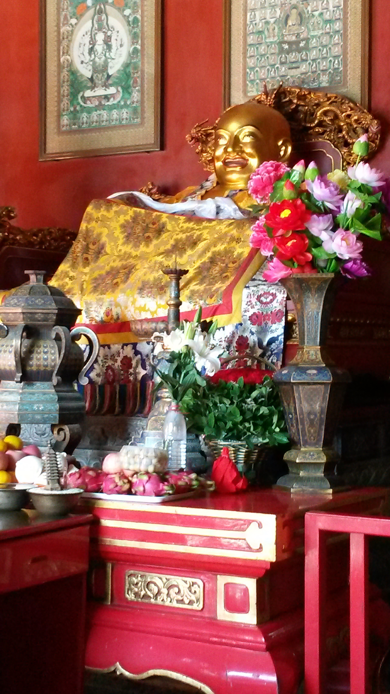
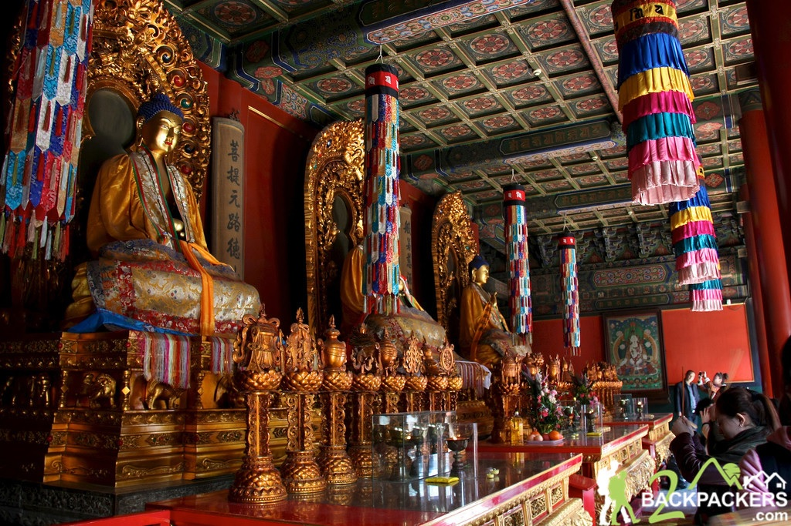
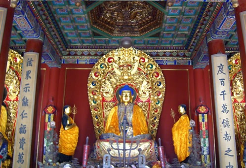
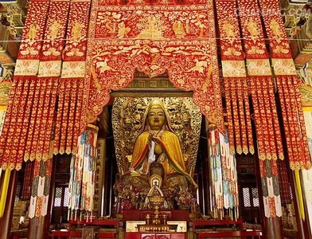
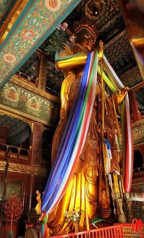

De Lamatempel, ook bekend als de 'Yonghetempel', het Paleis van vrede
en harmonie, is een prachtige tempel en tevens klooster van de Gelugschool van
het Tibetaanse Boeddhisme in het noordoosten van de stad Beijing. Het is een
van de grootste meest perfect bewaard gebleven en meest belangrijke Tibetaanse
Boeddhistische kloosters ter wereld. Het gebouw en de kunstwerken van de tempel
is een combinatie van Han-Chinese en Tibetaanse stijlen.
Geschiedenis
De bouw van de Lamatempel begon in 1694, tijdens de Qing-dynastie. In eerste
instantie diende het als ambtswoning voor eunuchen van het hof, maar het werd
later omgebouwd tot het hof van de prins Yong, een zoon van de keizer en zelf
de toekomstige Yongzheng Keizer. Nadat Yongzheng's de troon in 1722 opvolgde werd
de helft van het gebouw omgebouwd tot een lamaklooster; een klooster voor
monniken van het Tibetaanse boeddhisme. De andere helft bleef een keizerlijk
paleis. Yongzheng's opvolger gaf de tempel keizerlijke status, aangeduid door het
vervangen van de turquoise tegels door gele tegels, welke gereserveerd waren voor
de keizer. Het klooster werd een residentie voor een groot aantal Tibetaanse
Boeddhistische monniken uit Mongolië en Tibet, zodoende werd de Lamatempel het
nationale centrum van Lamabeheer.
Gebouwen
De Lamatempel is gevestigd langs een noord-zuid hartlijn, met een lengte van 480
meter. Er zijn vijf grote zalen die worden gescheiden door binnenplaatsen. In de
binnenplaats in het zuiden kondigen een groot muurscherm en drie hoge Pailous
(Pailou: een vorm van Chinese traditionele gebouwen) de ingang van het gebouw aan.
De Hal van de Hemelse Koningen, de Tian Wang Dian of de Devaraja Hal, is de meest
zuidelijkste hoofdhal en komt na de eerste binnenplaats. Deze hal diende als de
hoofdingang voor het klooster. In het midden van de hal staat een gouden beeld
van de Meitrya Boeddha, langs de muren staan beelden van de vier Hemelse Koningen.

B De Zaal van Harmonie en Vrede
Deze hal wordt ook wel Yonghedong genoemd. De hal is het hoofdgebouw van de tempel.
In het gebouw zijn drie bronzen beelden te zien, zij beelden de Boeddha’s van de
Drie Eeuwen uit. Boeddha Gautama (Boeddha van het heden) staat in het midden,
rechts van dit beeld staat Boeddha Kasyapa Matagna (Boeddha van het verleden) en
links Boeddha Maitreya (Boeddha van de toekomst). In de hal zijn muurschilderingen
aanwezig van de bodhisattva Avalokitesvara aanwezig. Een bodhisattava is een
persoon in het Theravada boeddhisme streeft naar verlichting. Avalokitesvara is
de bodhisattva die compassie belichaamt. Verder zijn er in de hal achttien
Arahant’s langs de muren geplaatst. Arahant’s zijn in het Theravada Boeddhisme
‘perfecte personen’, deze personen hebben het Nirvana bereikt. Vaak zijn het
boeddha’s of discipels van een boeddha.

C De Zaal van Eeuwige Zegeningen
In deze zaal was de voormalige woonruimte van keizer Yongzheng wanneer hij prins
was en de plek waar zijn kist werd geplaatst na zijn dood. Tegenwoordig kun je
in deze hal een beeld van de genezende Boeddha Bhaisajya-guru vinden.

D De Zaal van het Dharmawiel
De hal functioneert als een plaats waar heilige geschriften gelezen worden en
religieuze ceremonies plaatsvinden. Het bevat een groot standbeeld van
Je Tsongkhapa, stichter van de Gelugschool. In de hal is ook de
Vijf-Honderd-Arahant-Heuvel aanwezig, dit is een uit rood sandelhout gemaakt
beeld. De Arahant’s op het beeld zijn gemaakt uit goud, zilver, koper, ijzer
en tin.

E Het Paviljoen van Oneindig Geluk
Deze zaal noemt men ook wel Wangfuge. De hal bevat een gigantisch beeld van de
Boeddha Maitreya. Het beeld is 26m hoog, goud geverfd en met doeken aangekleed,
door de lengte van het beeld lijkt het over te hellen als je aan de voet staat.
Het beeld staat midden in de hal, het gebouw is er vrij strak tegen aangebouwd
dus je moet vrij dichtbij komen om het hoofd te kunnen zien. Het beeld is gemaakt
uit een stuk wit sandelhout en is een van de drie kunstwerken in de Lama Tempel
dat opgenomen is in het Guinness Book of Records (1993).

Geloof
Hoewel de Lama Tempel een toeristische attractie is, wordt deze plek nog steeds
gebruikt door de Chinezen om gebeden te doen en tot rust te komen. Je kunt bij
de ingang wierookstokjes halen en die dan vervolgens opbranden, terwijl je bidt,
op een van de daarvoor bestemde plekken. Veel Chinezen doen dat dan ook en dat
is te zien op de filmpjes hieronder.